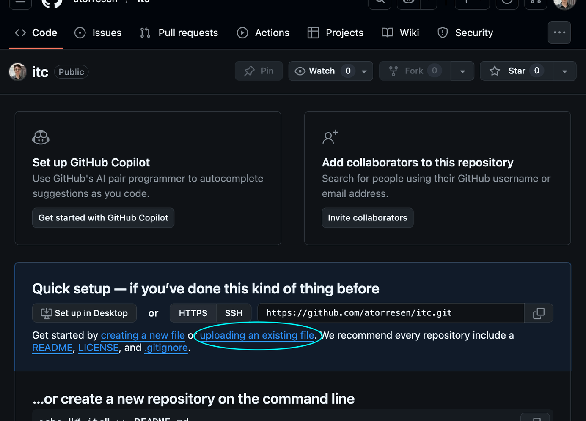
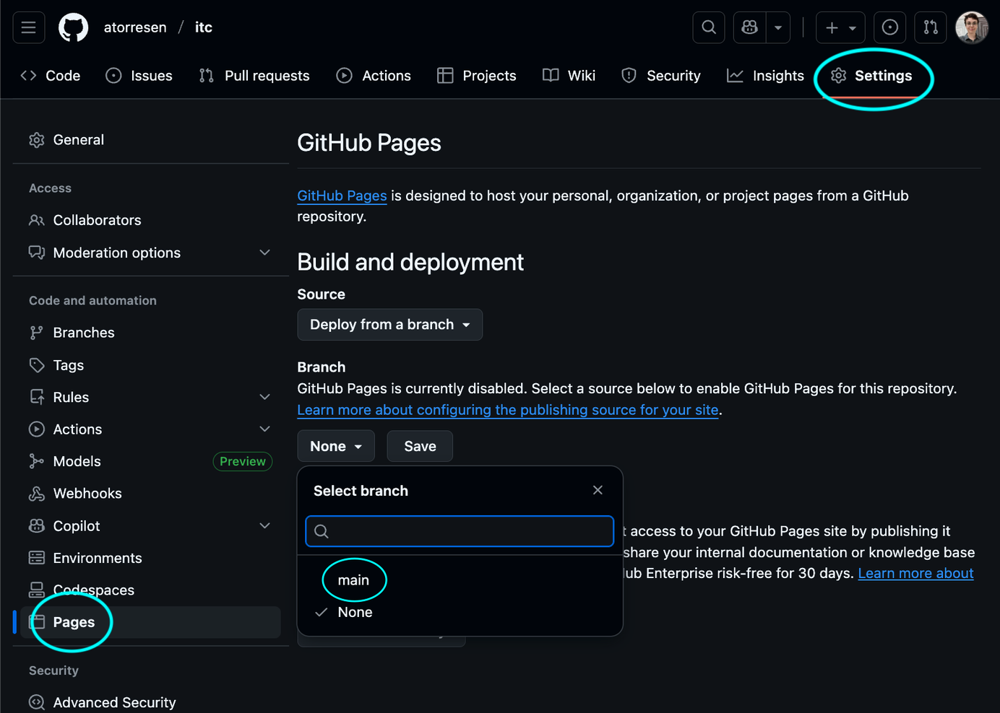
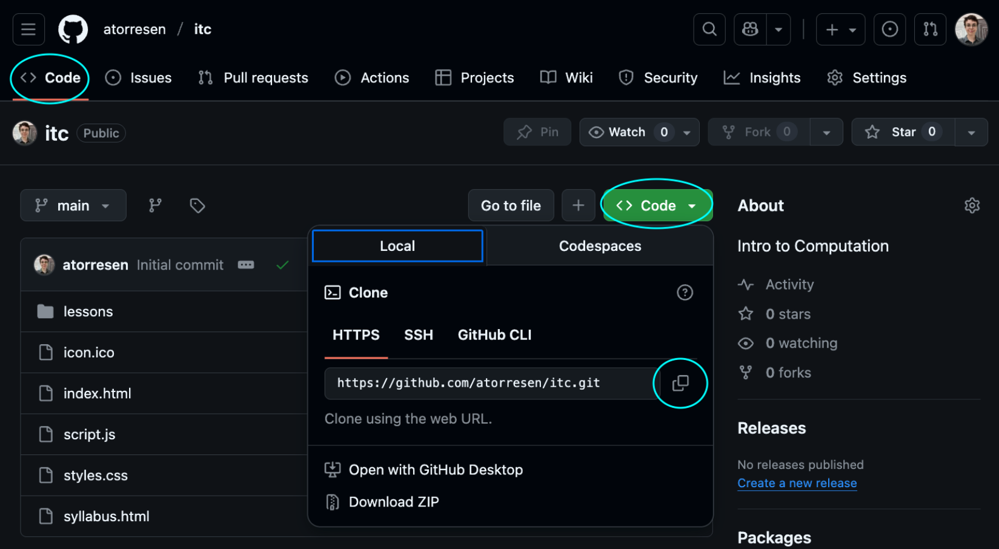
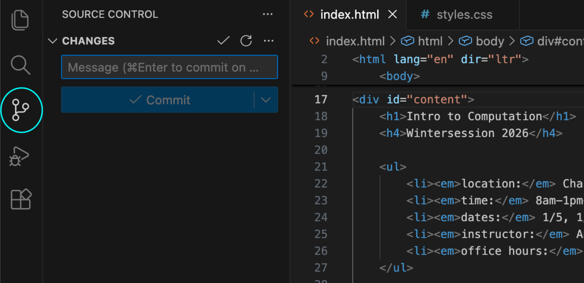
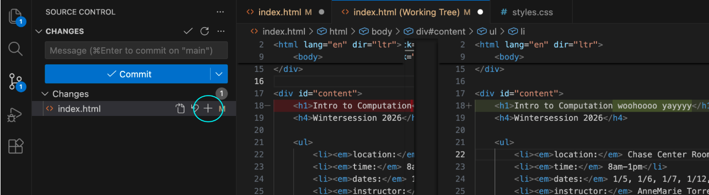

Connect a GitHub Account
Git is a tool for keeping track of versions of your code projects. GitHub is a platform that uses Git for publishing websites.
The following steps (1-3) lead you through installing Git on your computer, creating a GitHub account, and then linking your GitHub account to your computer. You only need to do this once; after you have successfully completed these steps, your computer should be set up for using Git and GitHub as much as you want.
- Download and install the latest version of Git
- On Mac: Git comes pre-installed on some Apple computers. To see if you already have it, open the Terminal app and type
git version, then hit Enter. If a version number appears, you are ready to go. If an alert appears prompting you to install Command Line tools, click Install
- Here is documentation for installing Git on all operating systems
- Make a GitHub account
- Connect your laptop to you your GitHub account
Here is the full documentation for this step. TLDR:
-
Open the Terminal app on Mac or Command Prompt on Windows.
-
Feel like a super cool coder.
-
Set your username (doesn't technically have to be the same as your GitHub username, but it makes sense to make them match) by running the following (code in purple should be replaced with your personalized info):
git config --global user.name "yourUserName"
-
Set your email address (this DOES have to be the same email you used to sign up for your GitHub account):
git config --global user.email "yourEmail@email.com"
Create a Repository
A repository is ... [TODO]
-
Create a new repository
Log in to github.com. Click Create repository (sometimes this is hidden beyond a [+] button in top right corner).
Choose a repository name.
Your name should have no spaces (for example "IntroToComputation" or "intro_to_computation" instead of "Intro To Computation")
Keep the repository Public.
Click Create repository.
-
Upload files to the repository
On your new repository page, click uploading an existing file.
Drag your index.html and any linked files (e.g., styles.css or any images) into the repository. (Just upload the files, not the top-level folder that contains them).
Write a commit message (e.g., "Add files via upload" or "Initial commit") and commit your changes.

-
Deploy your code to the web
On the home page for the repository you just created, go to the Settings tab.
On the left of the Settings page, choose Pages. Then, under Branch, select main and hit Save.
Wait a minute or two for the servers to catch up. Then go to http://username.github.io/repositoryName
(fill in your own GitHub username and the repositoryName you just chose) to see your live webpage!

Clone a Repository
The files in your GitHub repository are the files that contain the code that shows on the web. Therefore, those are the files you need to make changes in if you want to make changes to your website. [TODO...]
-
If this is your first time cloning a repository: create a new folder called
Git in the home directory of your computer. This folder is where you will hold all of your Git-tracked code projects.
-
TODO: directions to home directory
-
Open the Terminal app on Mac or Command Prompt on Windows.
-
Use the command line to navigate into your
Git directory by running
cd Git
-
Copy the web URL of your GitHub repository, which you can find by clicking the green <> Code button on the repository page in GitHub.

-
Run the following in the command line to make a clone of your repository on your computer.
git clone https://yourUrlHere
-
Now you should see a new folder with your new repository inside of your Git folder. Open that folder in Visual Studio Code.
And you're read to keep coding!
Note: Once you have cloned your repository, delete the original files that you uploaded to GitHub. From now on, only work on the cloned version, because those are the files that are tracked by Git and you will be able to publish to the web.
Commit and Sync Changes
When you're satisfied with the edits you have made to your website, you can Commit your changes and then Sync them to GitHub and the web.
VS Code has tools for viewing, committing, and syncing changes to GitHub repositories (here is the full documentation).
-
Click the branching icon on the left-side toolbar to open up the Source Control view.

-
Click on a file to open a side-by-side "Working Tree" (aka, "the diff") showing the changes you have made since the last commit.
-
If you are satisfied with the changes, click the "+" icon on that file to stage the changes.

-
When you have staged all desired changes, type a commit message in the Message bar and click Commit.
- TODO: explain what a commit message should be
-
To push your changes to your published web page, click the Sync button.
-
The first time you do this, VS Code may open a browser window to connect with your GitHub account. Log on and allow GitHub to access your computer.
Once you have synced, it may take a few minutes for your changes to show up, but eventually you should see them at the URL for your repository (http://username.github.io/repositoryName).